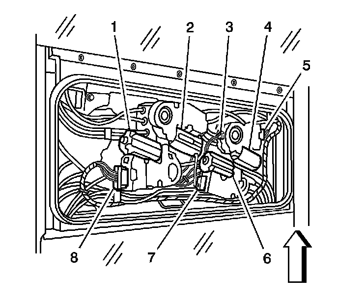
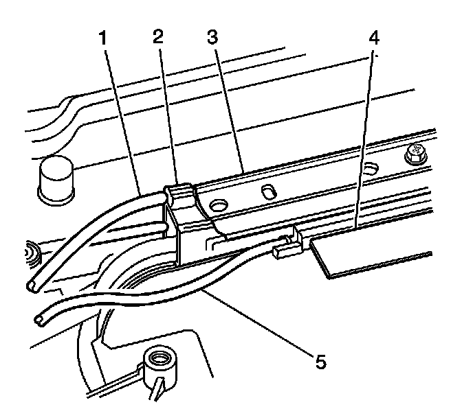
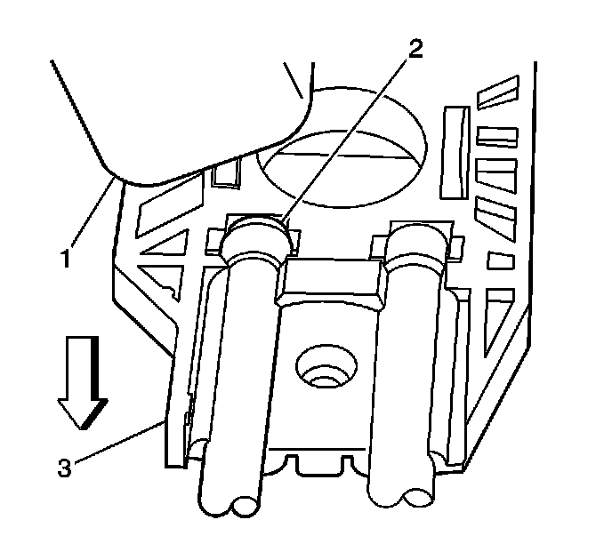
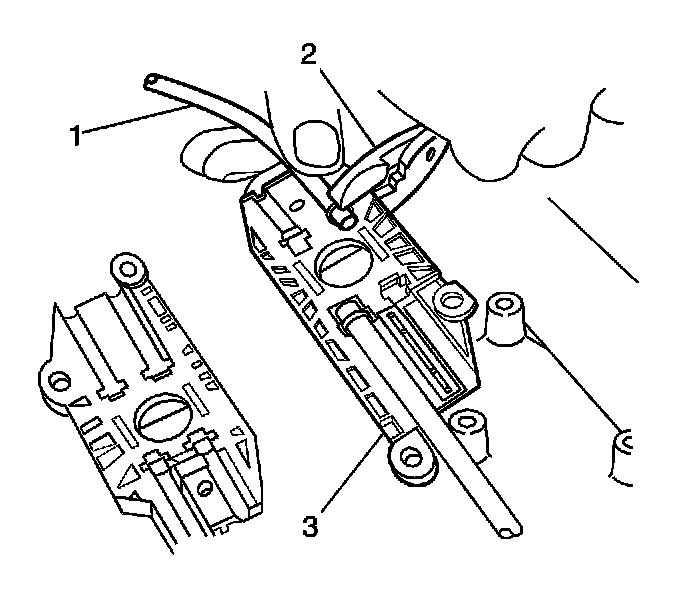
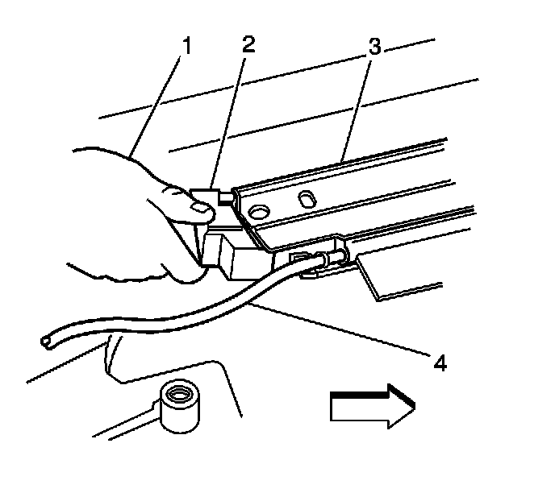
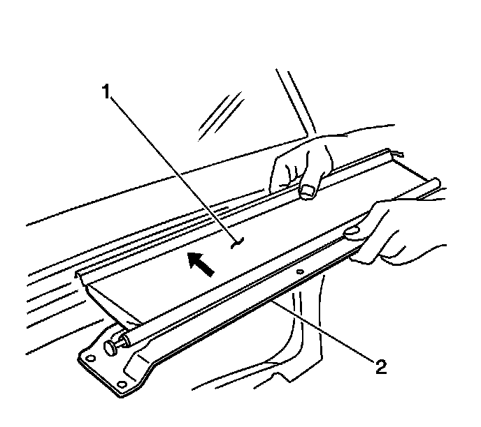

Sunroof Cable Return Tube Replacement (Rear Vent Window)
Sunroof Cable Return Tube Replacement (Rear Vent Window)
Removal Procedure
1. Open the rear sunshade to the full open position.

2. Remove the center window (2). Refer to Sunroof Window Replacement (Front) (Service and Repair)Sunroof Window Replacement (Rear Vent) (Service and Repair)Sunroof Window Replacement (Center) (Service and Repair)Sunroof Window Replacement (Rear Stationary) (Service and Repair) .
3. Remove the rear sunroof vent window. Refer to Sunroof Window Replacement (Front) (Service and Repair)Sunroof Window Replacement (Rear Vent) (Service and Repair)Sunroof Window Replacement (Center) (Service and Repair)Sunroof Window Replacement (Rear Stationary) (Service and Repair) .

4. Remove the rear sunroof motor/actuator (1). Refer to Sunroof Motor/Actuator Replacement (Sunroof Motor/Actuator Replacement) .
5. Remove the rear sunshade assembly. Refer to Sunroof Sunshade Assembly Replacement (Rear) (Sunroof Sunshade Assembly Replacement (Rear))Sunroof Sunshade Assembly Replacement (Front) (Sunroof Sunshade Assembly Replacement (Front)) .

6. Remove either the rear left or rear right sunroof rear window track (3). Refer to Sunroof Window Front Track Assembly Replacement (Sunroof Window Front Track Assembly Replacement) .
7. Cut the tie straps securing the electrical harness to the return tubes. Discard the tie straps if necessary.

8. Release the return tube (1) from the motor/actuator block. Use a flat-bladed tool to release the return tubes.
9. Hold onto the motor block and gently pry the return tube from the motor block.
10. Carefully remove the return tube from the motor/actuator compartment.
Installation Procedure

1. Position the return tube (2) to the motor block (3).

2. Use a standard pair of pliers (2) to carefully secure the return tube (1) to the motor block (3).
3. Loosely install 2 motor/actuator screws into the block in order to hold the block into position until the rear track (3) rear extension (2) is installed.

4. Install either the rear left or rear right sunroof rear window track (3). Refer to Sunroof Window Front Track Assembly Replacement (Sunroof Window Front Track Assembly Replacement) .

5. Install the rear sunshade assembly (2). Refer to Sunroof Sunshade Assembly Replacement (Rear) (Sunroof Sunshade Assembly Replacement (Rear))Sunroof Sunshade Assembly Replacement (Front) (Sunroof Sunshade Assembly Replacement (Front)) .
6. Install the rear window motor/actuator (1). Refer to Sunroof Motor/Actuator Replacement (Sunroof Motor/Actuator Replacement) .
7. Use new tie straps to secure the electrical harness to the return tubes, if necessary.
8. Install the rear sunroof vent window. Refer to Sunroof Window Replacement (Front) (Service and Repair)Sunroof Window Replacement (Rear Vent) (Service and Repair)Sunroof Window Replacement (Center) (Service and Repair)Sunroof Window Replacement (Rear Stationary) (Service and Repair) .
9. Install the center window (2). Refer to Sunroof Window Replacement (Front) (Service and Repair)Sunroof Window Replacement (Rear Vent) (Service and Repair)Sunroof Window Replacement (Center) (Service and Repair)Sunroof Window Replacement (Rear Stationary) (Service and Repair) .
10. Close the rear sunshade.
11. Perform the rear vent window/sunshade initialization process. Refer to Sunroof Rear Window Initialization Process (Sunroof Rear Window Initialization Process) .